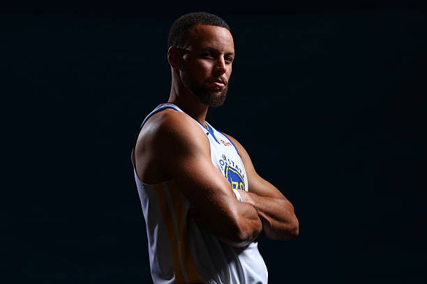
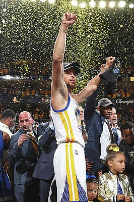
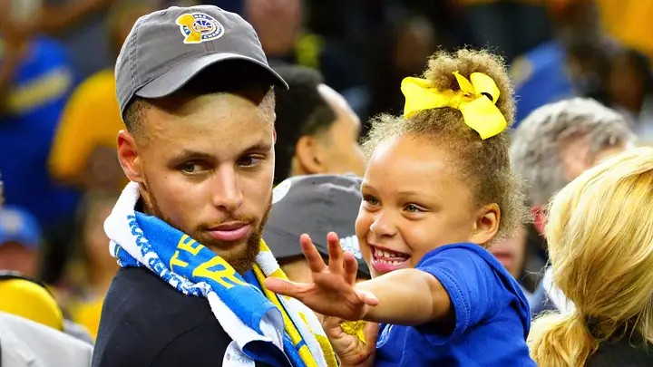

Stephen Curry
Armador - Golden State Warriors
- Sobre
- Carreira
- Prêmios
Wardell Stephen Curry II nasceu em 14 de março de 1988, em Akron, Ohio (EUA). É filho de Dell Curry, que também foi jogador da NBA.
Jogou na Davidson College e foi escolhido pelos Golden State Warriors no draft de 2009. É considerado o maior arremessador de três pontos da história do basquete.
- 2009: entra na NBA, escolhido pelos Warriors.
- 2015: primeiro título da NBA.
- 2016: temporada recorde de bolas de três pontos.
- 2017 e 2018: bicampeão da NBA.
- 2022: quarto título e MVP das Finais.
- 2024: ouro nas Olimpíadas de Paris.
- 4 títulos da NBA
- 2 vezes MVP da temporada (2015 e 2016)
- MVP das Finais da NBA (2022)
- Medalha de ouro olímpica (2024)
Curiosidades
- Usa a camisa 30, a mesma do pai nos tempos de jogador.
- É conhecido pelos arremessos de longa distância.
- Seu apelido é "Chef Curry".
Conquistas
- Maior cestinha de bolas de três pontos da história da NBA.
- Primeiro MVP unânime da história da liga (2016).
- Campeão olímpico com a seleção dos EUA.
Galeria




Top 30 cestas de 3 pontos

▶
Assistir no YouTube: Top 30 cestas de 3 pontos de Stephen Curry